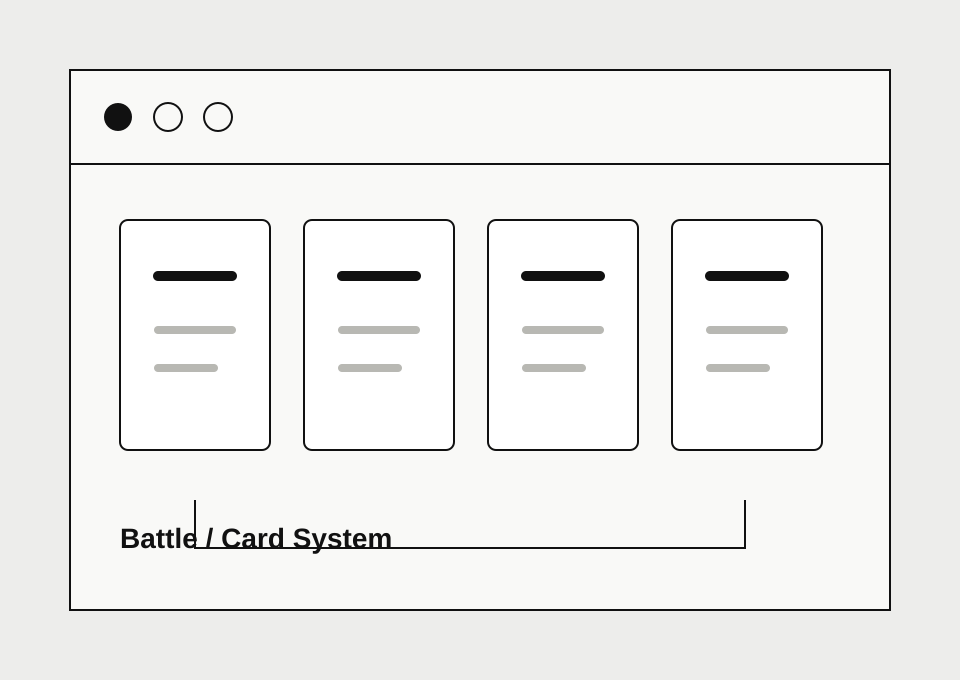

卡牌战斗
用卡牌表达行动、攻击、移动和资源消耗，让每回合决策具有明确代价。

该项目重点探索卡牌如何表达行动节奏、战斗策略与风险判断。玩家在房间中进行探索、遭遇敌人、使用不同武器与卡牌解决战斗，并在资源压力下做出撤离决策。
我希望把卡牌构筑、近战战斗与搜打撤的风险管理结合起来，让“打什么、怎么打、何时撤”成为玩家持续判断的核心。项目经历了从 Unity 到 Godot 的技术路线调整。
用卡牌表达行动、攻击、移动和资源消耗，让每回合决策具有明确代价。
围绕近战武器的距离、节奏和风险差异，建立不同打法的策略空间。
通过基础房间类型、敌人配置和资源奖励构成可测试的流程。
加入背包仓库、角色独立存档和撤离逻辑，形成搜集与带出目标。

后续可将实机演示视频放入 assets/videos/，并在此处添加 video 标签。
将战斗、探索、存档、背包拆成独立模块，先保证核心战斗闭环可跑通。
从 Unity 转向 Godot 后，重新梳理节点结构、输入逻辑和 UI 状态管理。
目前已完成完整用户界面、2 种武器、41 张卡牌、完整卡牌战斗系统、1 个可测试体验流程、自制视觉风格系统、背包仓库、角色独立存档、5 类房间与 5 种敌人。
能把抽象玩法拆成规则、资源、敌人、房间和反馈模块。
能将设计文档推进为可运行 Demo，并根据实现情况调整设计。